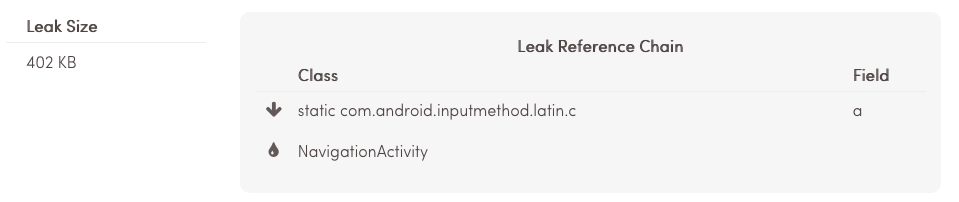
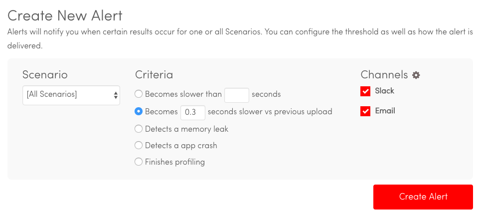
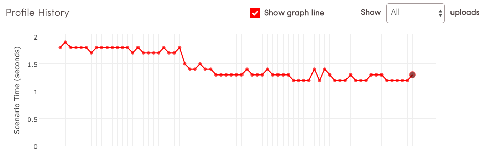

![Picture]()
Auto-discover user flows
Once you upload your APK, NimbleDroid will crawl the interface and identify user flows that your users can click through. Each of these flows will be added to the list of Scenarios that NimbleDroid will profile and analyze.
Try this Feature Feb 2016![Movie]()
Create Customized User Flows
In addition to our auto-discovered user flows, you can create custom user flows with as many steps as needed to profile actions that are critical to your business. Custom flows are created using standard Espresso syntax, and you can use simple log statements to annotate the exact start and stop of measurements. No SDK required.
Try this Feature May 2016Detect Memory Leaks
For every user flow that NimbleDroid profiles, it searches for memory leaks. In addition to reporting the presence of a leak, the root cause is reported via the reference chain for the leak. When used in Continuous Integration or as part of a release checklist, it can ensure dangerous leak never make it to production.
 Try this Feature May 2016Alerts for slowness, memory leaks, and crashes
Once you integrate NimbleDroid with your Continuous Integration you can configure email and Slack alerts to inform you about slowdowns, memory leaks, or app crashes. Stop manually checking your results and automate your way to peace of mind!
 Try this Feature Oct 2016Monitor your performance trending history
To really dive into app performance trending you can use our flexible trend graph, which you can use to zoom out to see all uploads or zoom in to see details.
 Try this Feature Dec 2016